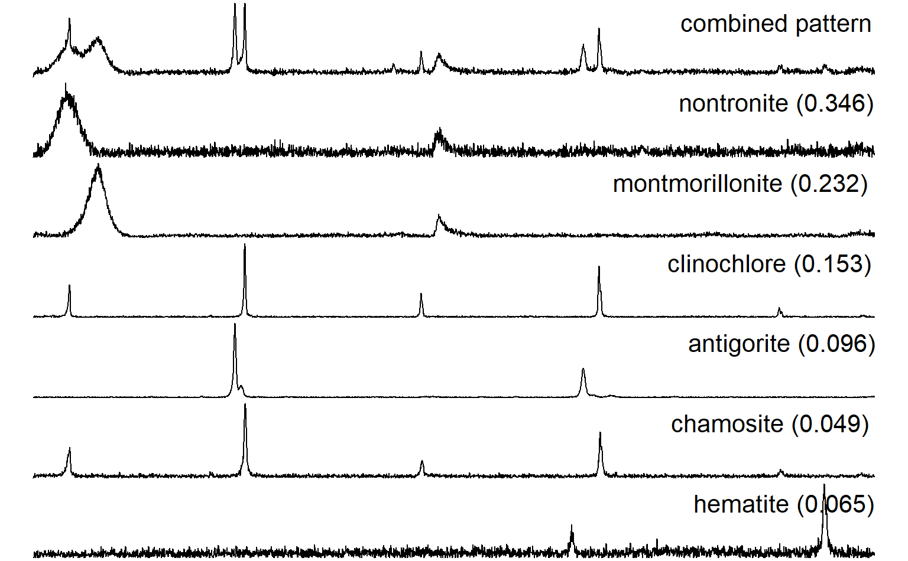
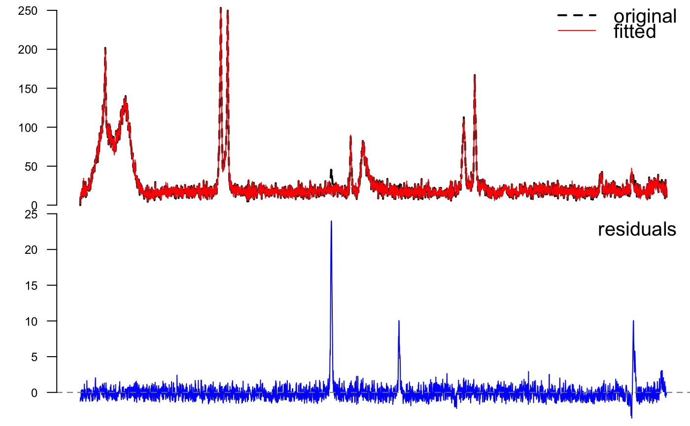

f.noise.RdBasic objective function that can be used as a starting point for developing XRD full-pattern matching strategies. [details pending...]
f.noise(inits, pure.patterns, sample.pattern, eps.total = 0.05)
| inits | vector of initial guesses for mineral fractions, last item is a noise component |
|---|---|
| pure.patterns | a matrix of XRD patterns of pure samples, resampled to the same twotheta resolution and rescaled according to an external standard |
| sample.pattern | the unkown or composite pattern, aligned to the same twotheta axis as the pure patterns and rescaled to an external standard |
| eps.total | precision of comparisons; currently not used |
This is similar to the work of Chipera and Bish (2002), using the methods described in (Bish, 1994). If the flexibility of a custom objective function is not required, the linear model framework should be sufficient for pattern fitting. GLS should be used if realistic standard errors are needed.
the sum of absolute differences between the unkown pattern and combination of pure patterns for the current set of mixture proportions
Chipera, S.J., & Bish, D.L. (2002) FULLPAT: A full-pattern quantitative analysis program for X-ray powder diffraction using measured and calculated patterns. J. Applied Crystallography, 35, 744-749.
Bish, D. 1994. Quantitative Methods in Soil Mineralogy, in Quantitative X-Ray Diffraction Analysis of Soil. Amonette, J. & Zelazny, L. (ed.) Soil Science Society of America, pp 267-295.
Dylan E. Beaudette
# sample data data(rruff.sample) # get number of measurements n <- nrow(rruff.sample) # number of components n.components <- 6 # mineral fractions, normally we don't know these w <- c(0.346, 0.232, 0.153, 0.096, 0.049, 0.065) # make synthetic combined pattern # scale the pure substances by the known proportions rruff.sample$synthetic_pat <- apply(sweep(rruff.sample[,2:7], 2, w, '*'), 1, sum) # add 1 more substance that will be unknown to the fitting process rruff.sample$synthetic_pat <- rruff.sample$synthetic_pat + (1 - sum(w)) * rruff.sample[,8] # try adding some nasty noise # rruff.sample$synthetic_pat <- apply(sweep(rruff.sample[,2:7], 2, w, '*'), 1, sum) + # runif(n, min=0, max=100) # look at components and combined pattern par(mfcol=c(7,1), mar=c(0,0,0,0)) plot(1:n, rruff.sample$synthetic_pat, type='l', axes=FALSE) legend('topright', bty='n', legend='combined pattern', cex=2) for(i in 2:7) { plot(1:n, rruff.sample[, i], type='l', axes=FALSE) legend('topright', bty='n', legend=paste(names(rruff.sample)[i], ' (', w[i-1], ')', sep=''), cex=2) }## fit pattern mixtures with a linear model l <- lm(synthetic_pat ~ nontronite + montmorillonite + clinochlore + antigorite + chamosite + hematite, data=rruff.sample) summary(l)#> #> Call: #> lm(formula = synthetic_pat ~ nontronite + montmorillonite + clinochlore + #> antigorite + chamosite + hematite, data = rruff.sample) #> #> Residuals: #> Min 1Q Median 3Q Max #> -3.5972 -0.6693 -0.1533 0.4238 24.0017 #> #> Coefficients: #> Estimate Std. Error t value Pr(>|t|) #> (Intercept) 1.2348183 0.0509941 24.21 <2e-16 *** #> nontronite 0.3449640 0.0008044 428.83 <2e-16 *** #> montmorillonite 0.2314518 0.0004195 551.68 <2e-16 *** #> clinochlore 0.1520822 0.0007385 205.92 <2e-16 *** #> antigorite 0.0959113 0.0002042 469.70 <2e-16 *** #> chamosite 0.0498834 0.0013887 35.92 <2e-16 *** #> hematite 0.0746220 0.0010858 68.72 <2e-16 *** #> --- #> Signif. codes: 0 '***' 0.001 '**' 0.01 '*' 0.05 '.' 0.1 ' ' 1 #> #> Residual standard error: 1.475 on 2993 degrees of freedom #> Multiple R-squared: 0.9971, Adjusted R-squared: 0.9971 #> F-statistic: 1.715e+05 on 6 and 2993 DF, p-value: < 2.2e-16 #>par(mfcol=c(2,1), mar=c(0,3,0,0)) plot(1:n, rruff.sample$synthetic_pat, type='l', lwd=2, lty=2, axes=FALSE, xlab='', ylab='') lines(1:n, predict(l), col=2) axis(2, cex.axis=0.75, las=2) legend('topright', legend=c('original','fitted'), col=c(1,2), lty=c(2,1), lwd=c(2,1), bty='n', cex=1.25) plot(1:n, resid(l), type='l', axes=FALSE, xlab='', ylab='', col='blue')## fitting by minimizing an objective function (not run) # SANN is a slower algorithm, sometimes gives strange results # default Nelder-Mead is most robust # CG is fastest --> 2.5 minutes max # component proportions (fractions), and noise component (intensity units) # initial guesses may affect the stability / time of the fit ## this takes a while to run # # synthetic pattern # o <- optim(par=c(0.1, 0.1, 0.1, 0.1, 0.1, 0.1, 0.1), f.noise, # method='CG', pure.patterns=rruff.sample[,2:7], # sample.pattern=rruff.sample$synthetic_pat) # # # # estimated mixture proportions # o$par # # # compare with starting proportions # rbind(o$par[1:n.components], w) # # # if we had an unkown pattern we were trying to match, compare fitted here # # compute R value 0.1 - 0.2 considered good # # sum(D^2) / sum(s) # # o$value / sum(rruff.sample$sample) # # # plot estimated mixture vs sample # # combine pure substances # pure.mixture <- apply(sweep(rruff.sample[, 2:7], 2, o$par[1:n.components], '*'), 1, sum) # # # add in noise # noise.component <- o$par[n.components+1] # est.pattern <- pure.mixture + noise.component # # # # plot results # par(mfcol=c(2,1), mar=c(0,3,0,0)) # plot(1:n, rruff.sample$synthetic_pat, type='l', lwd=2, lty=2, axes=FALSE, # xlab='', ylab='') # lines(1:n, est.pattern, col=2) # lines(1:n, rep(noise.component, n), col=3) # axis(2, cex.axis=0.75, las=2) # legend('topright', legend=c('original','fitted','noise'), col=c(1,2,3), lty=c(2,1,1), # lwd=c(2,1,1), bty='n', cex=1.25) # # plot(1:n, rruff.sample$synthetic_pat - est.pattern, type='l', axes=FALSE, # xlab='', ylab='') # abline(h=0, col=grey(0.5), lty=2) # axis(2, cex.axis=0.75, las=2) # legend('topright', legend=c('difference'), bty='n', cex=1.25) #